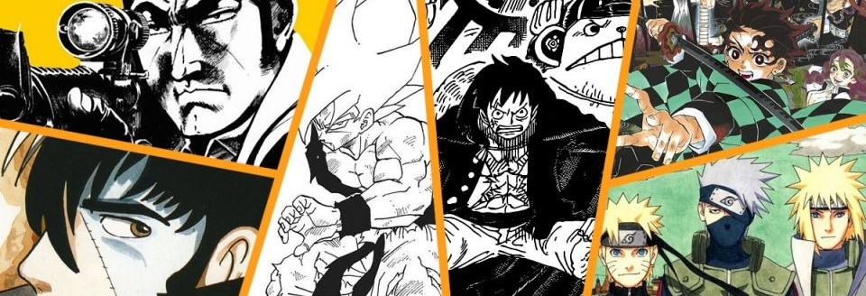

A historical drama that explores the lives of three men named Adolf during the lead up to World War II. The series features Tezuka's signature artwork and explores themes of nationalism and identity.

MY TOP MANGAS
Remember this is just my opinion according what I have read and enjoyed, I hope you can find it interesting!.
TOP 10
Adolf
Osamu Tezuka
TOP 09
Tokyo Ghoul
Sui Ishida
A horror series that explores themes of identity and survival, Tokyo Ghoul follows a young man who becomes a half-ghoul after a violent encounter with a ghoul. The series features visceral artwork and an intricate plot.
TOP 08
Oyasumi Punpun
Inio Asano
A coming-of-age story that follows a young boy named Punpun as he navigates the complexities of life and love. The series features unique artwork that is both whimsical and dark.
TOP 07
Dorohedoro
Q Ayashida
In an alley, Nikaido, a young martial arts expert who runs a restaurant, finds Caiman, a man with the head of a reptile and amnesia. To finish, both decide to finish off the sorcerers until they kill the correct one that makes the enchantment disappear.
TOP 06
Chainsaw Man
Tatsuki Fujimoto
A newcomer to the world of manga, Chainsaw Man follows a young man who becomes a demon hunter after merging with a chainsaw-demon. The series features visceral artwork and an off-beat sense of humor.
TOP 05
Hunter x Hunter
Yoshiro Togashi
Another shonen favorite, Hunter x Hunter follows a young boy who aspires to become a "Hunter," a skilled adventurer with special powers. The series features complex world-building and well-developed characters.
TOP 04
Akira
Katsuhiro Otomo
Set in a post-apocalyptic future, Akira is a cyberpunk classic that follows the story of a young biker gang member who gains psychic powers. The series is renowned for its groundbreaking artwork and intricate storyline.
TOP 03
Fullmetal Alchemist
Hiromu Arakawa
A shonen classic, Fullmetal Alchemist follows the adventures of two brothers who attempt to use alchemy to bring their deceased mother back to life. The series combines action, comedy, and drama to create a compelling story.
TOP 02
Monster
Naoki Urasawa
A psychological thriller, Monster follows a brilliant doctor who becomes involved in a conspiracy involving a mysterious young boy. The series is known for its intricate plot and well-crafted characters.
TOP 01
Berserk
Kentaro Miura
With its intense and graphic storytelling, Berserk has become a cult classic among fans of dark fantasy manga. The series follows the story of Guts, a skilled warrior who becomes embroiled in a world of demons and supernatural beings.